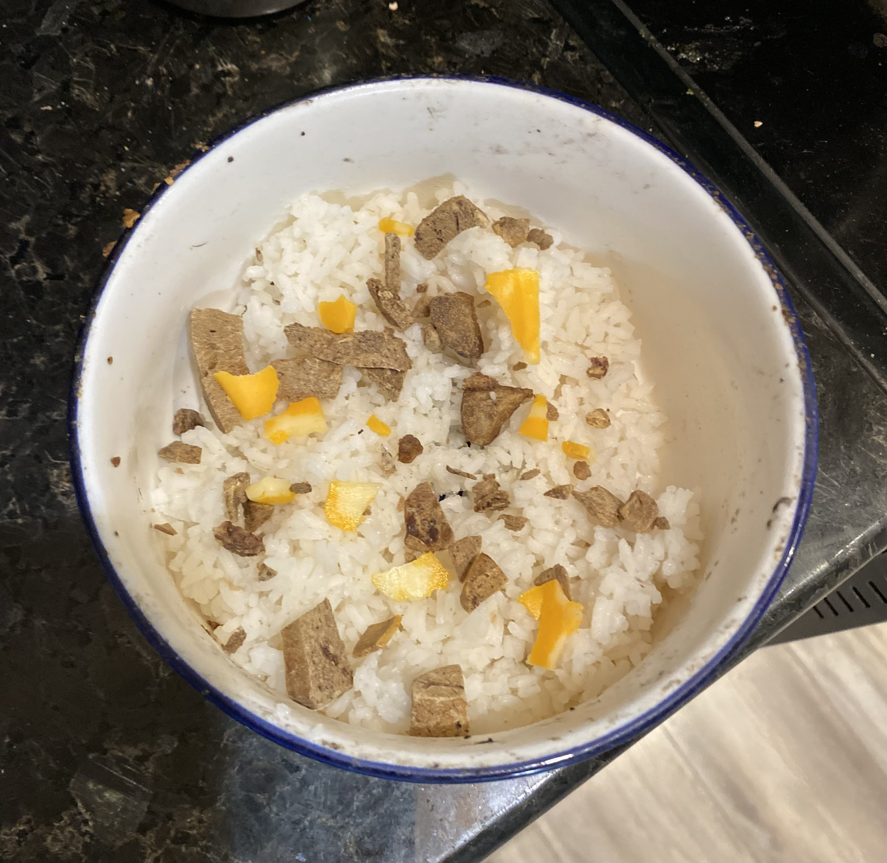

Dog Food

Description
I have this dog named Stella. One time I got up to feed her and noticed that
her bag of food was getting empty. I didn't care because I have the best recipe
for dog food ever. Stella would rather eat this meal then that bagged crap any day.
prep time- 5 minutes
cook time- 15 minutes
total time- 20 minutes
servings- 2 servings
Ingredients
- 1/2 cup of Minute Rice(TM)
- 1/2 cup of water
- Bag of frozen corn or peas
- 1 block of marble cheese
- Dried liver bited
- A pinch of salt
Steps
- Add 1/2 cup of water to a small pot and add your pinch of salt.
- Boil water until it reaches a rolling boil and add your 1/2 cup of Minute Rice(TM).
- Put a lid on the pot and turn stove top off. The rice will be ready in 10 minutes
- In the meantime add 1/4 of frozen peas to a bowl.
- Slice 2 slices of chesese and cut them into bite size pieces.
- Take your dried liver bites, crush them up and add them to the bowl.
- Once the rice is done, transfer it to a dish and add your other bowl of peas, cheese and liver.
- Let cool and serve warm.
Return to main page